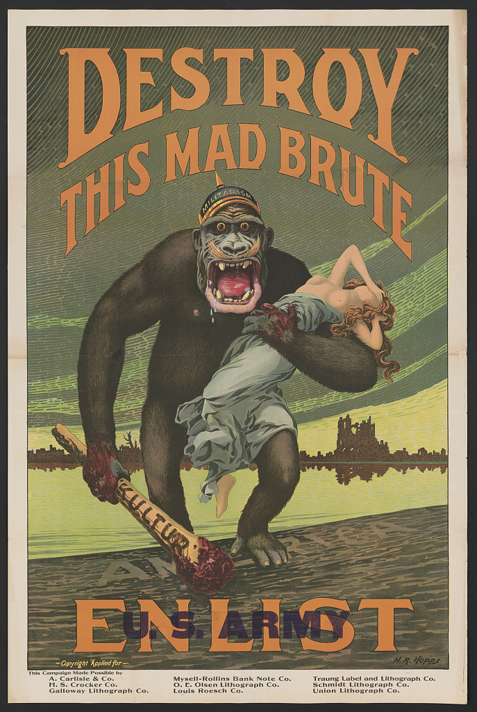
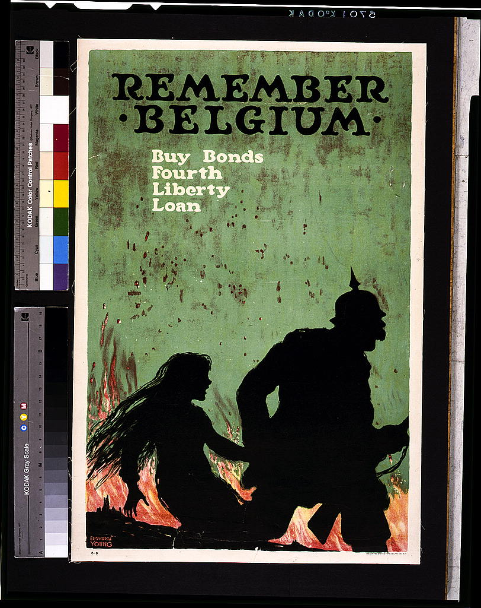
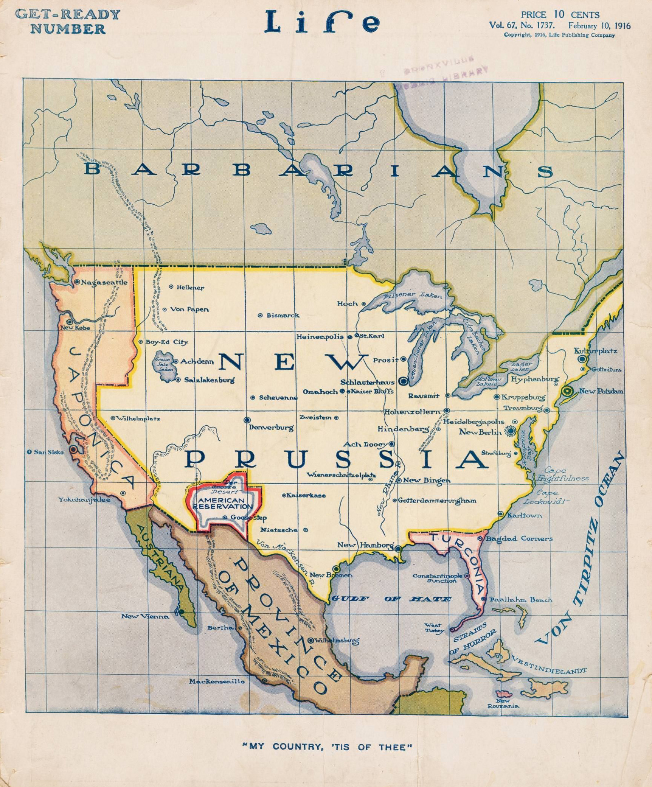
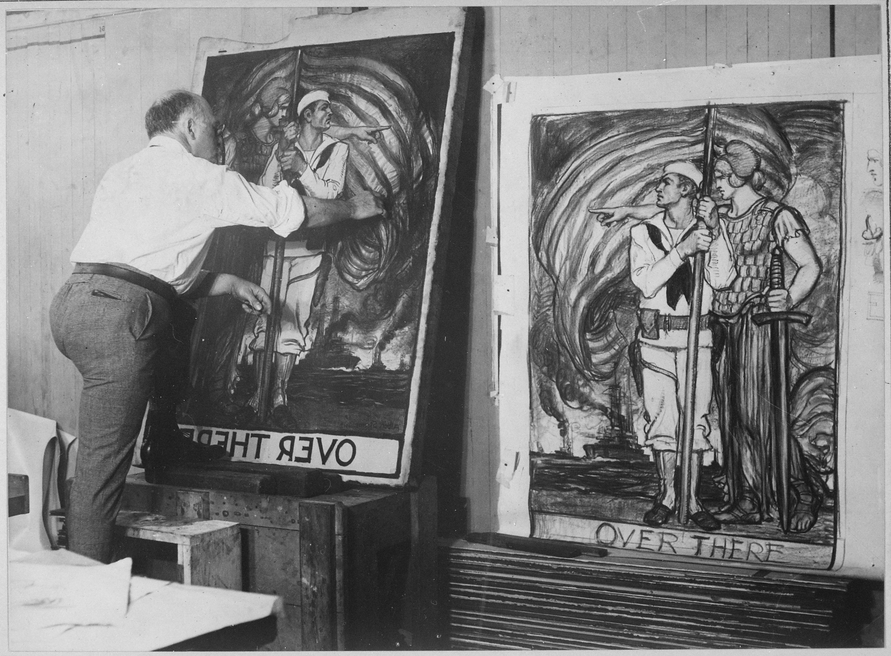
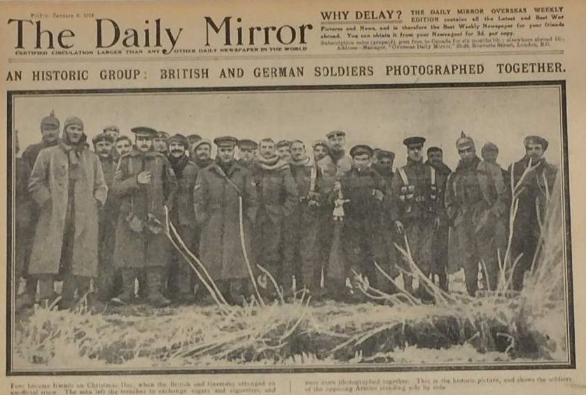

This war propaganda poster from 1918 illustrates how the American public’s opinion of Germany was coloured by the events such as the Rape of Belgium and the killing of Americans on ships due to unrestricted submarine warfare. Americans were incentivised to join the US Army in order to stop the German “ape” from imposing its “kultur” on the world. Germany is depicted as a “mad brute”, hauling away a woman in Classical dress and posture with bloody hands while wearing the crown of “militarism”. The woman, revealing something of the gender norms of the time and calling back to 19th century ideas of Manifest Destiny and imperialism, represents liberty and democracy - something precious and beautiful soldiers should fight to preserve from Germany’s bloody grip. In the illustration, the ape, presumably having come from the ruined and desolate cities in the background, is stepping onto the shore of America. This piece of propaganda tells the viewer that the German threat has left Europe, and the same destruction suffered by Belgium and France could soon come to the US.
At the start of the war, German submarines would surface to carry out formal searches of cargo and allow crew to escape, but in February of 1915, Germany declared a war zone around Britain in which any ships would be immediately sunk. The RMS Lusitania, a luxury passenger liner, was given no warning before being torpedoed by a German U-boat on 07 May that same year. It was crossing the Atlantic from New York to Liverpool when a German U-20 fired upon it, resulting in a rapid sinking and the death of 1200 of almost two thousand passengers. Though it had been used as a passenger ship since its maiden voyage in 1906, it had been built during a time of rising tensions in Europe, so it was given the ability to be converted into a warship if the need arose (‘18 Minutes That Shocked the World’). It had indeed been used to carry Allied war materiel, and may have been doing so at the time of its sinking. 128 of the people killed were Americans - a fact which led the US government, neutral at the time, to severely protest Germany’s unrestricted submarine warfare. Germany halted the policy in September, but the pause would prove to be short-lived. In February 1917, unrestricted submarine warfare was resumed (‘The Lusitania Disaster’).

The 1839 Treaty of London guaranteed Belgian neutrality in European affairs, but Germany paid no regard to this in passing through Belgium in order to defeat France. In doing so, many Belgian towns were ravaged and looted, and their civilians killed or wounded. One of the most famous such cities was Leuven, located east of Brussels. Belgian accounts of the German occupation of Leuven during August 1914 - which were reported in Britain and the US and given credibility over the German version of events - stated that German troops had massacred civilians, raped Belgian women, and destroyed historical buildings. Indeed, German troops burnt the Leuven library during the occupation (Meurer and Mayence 1928). Whether or not the Belgians had provoked German troops was unimportant: Allied populations were outraged. The poster above shows a German soldier (recognisable by the characteristic “Pickelhaube” helmet) running from a falling Belgian woman in a blazing city with the provocative title “Remember Belgium”. Allied war propaganda in the United States often took advantage from the strong emotional reaction to apparent “atrocities” such as this to garner support for the war effort and call citizens to action. The Rape of Belgium was one factor that turned American opinion of Germany more and more sour as the war raged on.

Americans were fearful of what would happen if the Great War came to US soil. This 1916 Life Magazine cover artwork depicts a North America split between the Central Powers. The “Gulf of Hate” and “Straits of Horror” warn of tyrannical German rule, and an “American Reservation” harkens back to the conquest of native peoples by European settlers (which, of course, white Americans wished to avoid happening to themselves). Mexico is preserved due to an alliance with Germany, as indicated by the Zimmerman note roughly one year prior to this publication. Cities and bodies of water are renamed. This cover was war-time propaganda, with the purpose of urging American involvement in the war now so as to keep the conflict in Europe and keep the Central Powers out of North America. As World War I continued, Germany was threatening American trade and ships, and an antagonistic relationship was forming between it and the United States despite the latter’s ostensible neutrality. This Life Magazine cover captures the worst fears of the American public a year before the United States’ entry into the war.

Producing and distributing war propaganda was crucial to encouraging the war effort and keeping morale high. This photograph, produced in 1915 by the War Department, shows Albert Sterner painting war posters. The Library of Congress Prints and Photographs Division by itself has digitised copies of about 1900 posters created between 1914 and 1920. The poster as a genre was vital to the widespread dissemination of information during the war, and served to advertise the army, navy, and other parts of the war effort to participating and non-participating civilians. Despite the United States’ late entry into the war, American posters numbered greater than posters from any other country (‘About This Collection’).

Both sides of the war had forecast an ending by Christmas 1914, but by this period, it was clear the end would not be so swift. Still, there was hope for peace soon, and despite a failed attempt by Pope Benedict to arrange a Christmas truce, British and German troops on some frontiers chose to unofficially stop the fighting from Christmas till the New Year, recognising their common religion, and that they ‘all [had] wives and children’ (Walker 2020). This Daily Mail newspaper is an example of the kind of reporting Americans relied on to read about the war decades before the widespread adoption of radio or television. Americans learnt that German and British troops even played games, shook hands, and smoked together. This type of coverage could be one indicator as to why the American public felt neutrally towards the war in its first one or two years: the soldiers on conflicting sides could almost be described as amicable towards one another, and it seemed that the war would end before American intervention would be relevant. However, it would soon become clear that there was more at stake for the United States.